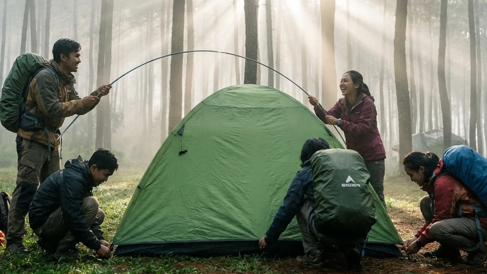

Di tengah gempuran tren wisata berbalut kemewahan seperti glamping yang menjamur di mana-mana, masih banyak jiwa-jiwa petualang yang dengan keras kepala mempertahankan gaya liburan klasik. Bagi mereka, memanggul ransel raksasa (carrier) di atas punggung, berjalan menyusuri tanjakan, dan membangun tenda dengan tangan sendiri adalah sebuah ritual spiritual yang tidak bisa digantikan oleh pelayanan hotel berbintang manapun. Gaya perjalanan ini dikenal luas dengan istilah backpacking.
Bila Anda adalah salah satu dari pejalan mandiri tersebut, atau sekadar pemula yang ingin melepaskan diri sejenak dari belenggu kenyamanan kota dengan anggaran terbatas, maka pencarian mengenai Rekomendasi Tempat Camping di Batu: Pilihan Lahan Asri untuk Pengalaman Backpacker adalah langkah yang amat tepat. Wilayah dataran tinggi Kota Batu di Jawa Timur menawarkan medan eksotis yang luar biasa ramah bagi para *backpacker*. Artikel komprehensif ini akan menguliti filosofi perjalanan ala *backpacker*, merinci kriteria lahan yang pas untuk anggaran terbatas, hingga merekomendasikan spot perkemahan terbaik yang akan memuaskan dahaga petualangan Anda.
1. Esensi Backpacker: Kembali ke Alam Tanpa Beban
Sebelum kita menyusun daftar destinasi, mari kita pahami terlebih dahulu landasan filosofis mengapa gaya hidup backpacking sangat dicintai oleh generasi muda di seluruh dunia.
Menghargai Kesederhanaan di Alam Terbuka
Menjadi seorang backpacker berarti merayakan kesederhanaan. Saat Anda hanya mengandalkan barang bawaan yang muat dimasukkan ke dalam satu ransel di punggung, Anda belajar untuk membedakan antara "kebutuhan" dan "keinginan". Tidur di dalam tenda dome yang sempit beralaskan matras tipis akan mengajarkan Anda betapa berharganya hangatnya sinar matahari pagi. Menyeduh segelas kopi instan menggunakan air yang direbus dari kompor portabel akan terasa seribu kali lebih nikmat daripada kopi buatan barista kafe mewah, karena ia diracik di tengah hembusan udara beku pegunungan.
Fleksibilitas dan Petualangan Sejati
Selain anggaran biaya liburan yang bisa ditekan seminimal mungkin (budget-friendly), kebebasan adalah kemewahan tertinggi seorang *backpacker*. Anda tidak terikat oleh jadwal *check-in* atau jam operasional *resort*. Anda bebas menentukan kapan harus berjalan, kapan harus mendirikan tenda, dan ke mana kaki harus melangkah. Interaksi organik dengan warga lokal dan sesama *camper* di lapangan seringkali menjadi memori perjalanan yang paling tak terlupakan.
BACA JUGA (Panduan Kemah Otentik):
2. Keunggulan Kota Batu Sebagai Destinasi Backpacker
Banyak pegunungan di Indonesia, namun mengapa Kota Apel ini selalu menjadi jujugan (destinasi utama) bagi para *backpacker* dari luar kota maupun luar provinsi?
Cuaca Sejuk dan Kualitas Udara Pegunungan
Keunggulan absolut Kota Batu adalah posisi geografisnya yang berupa ceruk di antara jajaran Gunung Arjuno, Welirang, dan Panderman. Berada di elevasi tinggi, Batu menyajikan suhu udara yang konsisten sejuk di siang hari dan amat dingin di malam hari (sering disebut fenomena bediding). Kualitas udara yang bersih dari polusi ini adalah obat terapi alami (healing) bagi paru-paru wisatawan yang lelah menghirup asap knalpot kota.
Akses Transportasi Publik yang Memadai
Bagi seorang *backpacker* yang tidak membawa kendaraan pribadi, akses logistik adalah nyawa. Kota Batu sangat bersahabat karena terhubung amat baik dengan Stasiun Kota Baru Malang dan Terminal Arjosari. Terdapat jaringan angkutan kota (angkot) dan ojek daring (online) yang memadai untuk mengantarkan Anda dari pusat kota hingga ke titik awal (basecamp) area perkemahan dengan biaya yang masih amat rasional.
3. Kriteria Memilih Lahan Kemah Backpacker
Seorang *backpacker* memang tangguh, namun memilih lokasi perkemahan yang asal-asalan bisa merusak keseluruhan perjalanan. Berikut kriteria ground yang ideal:
Biaya Sewa Ground yang Terjangkau
Namanya juga *backpacker*, tentu prinsip ekonomi harus ditegakkan. Carilah pengelola lahan (camping ground) yang menyewakan lapak tenda dengan sistem Hitungan Per Orang atau Per Kavling yang harganya tidak menguras kantong. Biaya masuk yang masuk akal biasanya berkisar antara Rp 15.000 hingga Rp 35.000 per orang untuk menyewa lapak tanahnya saja (membawa tenda sendiri).
Ketersediaan Sumber Air Bersih dan Sanitasi Dasar
Boleh saja tidur beralaskan tanah, namun urusan buang air adalah pengecualian. Lahan kemah yang layak wajib menyediakan titik sumber mata air mengalir untuk kebutuhan memasak dan mencuci nesting (panci), serta blok toilet umum yang fungsional meskipun sederhana. Tidak adanya air bersih akan membuat *backpacker* menderita dehidrasi atau terserang gangguan pencernaan.

Memasak logistik makanan secara mandiri menggunakan kompor gas portabel dan panci bersusun (nesting) adalah kemampuan dasar yang wajib dikuasai oleh seorang backpacker sejati. (Dokumentasi: Batu Sunrise Camp)4. Rekomendasi Lahan Asri untuk Pengalaman Backpacker
Untuk menjawab inti pencarian Rekomendasi Tempat Camping di Batu: Pilihan Lahan Asri untuk Pengalaman Backpacker, kami telah menyaring tiga spot terbaik yang wajib Anda rambah.
Batu Sunrise Camp (Opsi Aman & Hemat)
Meskipun terkenal dengan layanan *Comfort Camping* VIP-nya, Batu Sunrise Camp ternyata amat ramah terhadap *backpacker* independen. Jika Anda membawa tenda dome sendiri dari rumah, Anda bisa menyewa kavling ground-nya saja dengan harga yang sangat terjangkau. Keistimewaan utamanya terletak pada rimbunnya tegakan pohon pinus, serta orientasi tanah yang lurus menghadap timur. Anda akan mendapatkan bonus pemandangan lautan lampu kota (City Light) Malang di malam hari dan mahakarya Golden Sunrise di pagi buta, lengkap dengan fasilitas toilet duduk permanen dan colokan listrik bersama yang amat aman.
Area Bumi Perkemahan Bedengan
Jika Anda mencari nuansa rimbun yang lebih rapat, Bedengan adalah legenda klasik di kalangan pecinta alam Malang Raya. Area ini dihiasi oleh kanopi pohon pinus tua yang masif, ditambah dengan aliran sungai dangkal nan jernih yang membelah tepat di tengah-tengah ground. Harga tiket masuknya yang sangat merakyat menjadikannya primadona bagi kantong mahasiswa dan *backpacker* muda. Anda akan tertidur pulas ditemani white noise dari gemericik air sungai pegunungan.
Kawasan Hutan Pinus Coban Talun
Kawasan wisata air terjun Coban Talun juga mengelola lahan perkemahan yang amat luas. Berada di Kecamatan Bumiaji, lokasinya menawarkan udara yang ekstra dingin karena elevasinya yang cukup tinggi. Fasilitas sanitasinya sudah tertata baik, menjadikannya pilihan yang ideal bagi kelompok *backpacker* yang ingin memadukan kegiatan berkemah malam dengan aktivitas trekking ringan menuju air terjun di pagi harinya.
5. Persiapan Logistik Esensial Ala Backpacker
Keberhasilan perjalanan seorang *backpacker* sepenuhnya bergantung pada seberapa cerdas ia mengorganisir barang bawaannya.
Manajemen Ransel (Carrier) yang Cerdas
Gunakan ransel (carrier) berkapasitas 40 hingga 60 liter. Terapkan prinsip Ultra-Light jika memungkinkan. Beban terberat (seperti tenda dan air minum) harus diletakkan di dekat punggung tengah agar pusat gravitasi tubuh Anda stabil. Jangan membawa barang yang tidak fungsional. Untuk urusan pakaian, bawalah baju berbahan dry-fit yang ringan dan cepat kering, jaket polar (fleece) untuk insulasi malam, serta selembar jaket windbreaker penahan angin. Hindari sama sekali membawa celana bahan jeans (denim) tebal ke area pegunungan karena amat sulit kering bila terkena embun.
Tenda Dome dan Sistem Tidur (Sleep System)
Bawalah tenda dome bertipe Double Layer. Lapisan luarnya (flysheet) sangat vital untuk menahan hujan dan hembusan angin beku Batu Malang, sementara lapisan jaring dalamnya (inner) memastikan Anda tidak tertetesi embun dari uap napas sendiri (*kondensasi*). Untuk Sleep System, pastikan Anda membawa matras gulung berlapis aluminium foil (untuk memblokir dingin tanah) dan masuklah ke dalam kantong tidur (sleeping bag) tipe mummy yang memiliki bulu polar tebal di bagian dalamnya.
Kompor Portabel dan Bahan Makanan Ringkas
Untuk urusan perut, bawalah kompor gas lipat portabel berserta tabung gas kaleng (hi-cook) yang telah dipasangi alat windshield (penghalang angin). Bawa panci aluminium bersusun (nesting) serbaguna. Untuk logistik makanan, bawalah beras secukupnya, mi instan, telur, sosis, dan sachet kopi atau jahe merah. Seduhan minuman hangat di sepertiga malam adalah penyelamat nyawa dari ancaman hipotermia.
BACA JUGA (Tips Logistik & Alat):
6. Etika Backpacker di Alam Bebas (Leave No Trace)
Seorang *backpacker* sejati dihormati bukan karena betapa jauh perjalanannya, melainkan seberapa besar adabnya terhadap lingkungan yang ia singgahi.
Terapkan hukum Leave No Trace (Jangan tinggalkan jejak apa pun). Semua sampah plastik, bungkus logistik, dan putung rokok wajib dimasukkan ke dalam trash bag (kantong sampah) mandiri dan dibawa turun hingga ke penampungan sampah di kota. Dilarang keras menyalakan api unggun sembarangan dengan membakar rumput hidup, apalagi mematahkan dahan pohon segar. Gunakanlah alas bakar api (fire pit) yang telah disediakan oleh pengelola. Hormati juga keheningan alam dengan tidak memutar musik bervolume tinggi di malam hari yang bisa membuat satwa liar menjadi stres.
7. Kesimpulan
Memilih jalan sunyi sebagai seorang petualang mandiri adalah sebuah keputusan liburan yang akan mengubah cara pandang Anda terhadap kehidupan. Melalui panduan Rekomendasi Tempat Camping di Batu: Pilihan Lahan Asri untuk Pengalaman Backpacker di atas, kita disadarkan bahwa kebahagiaan (healing) hakiki tidak selalu membutuhkan dompet yang tebal. Dengan manajemen logistik carrier yang cerdas, penguasaan layering system pakaian penahan dingin, serta kelihaian memasak menggunakan kompor portabel, Anda sudah bisa menikmati keagungan alam pegunungan secara utuh. Lahan-lahan asri layaknya Batu Sunrise Camp telah membentangkan karpet hijaunya untuk menyambut tenda dome klasik Anda. Siapkan fisik Anda, kemas ransel dengan bijak, dan biarkan dinginnya angin serta hangatnya Golden Sunrise Kota Batu menempa jiwa petualang Anda di akhir pekan nanti.